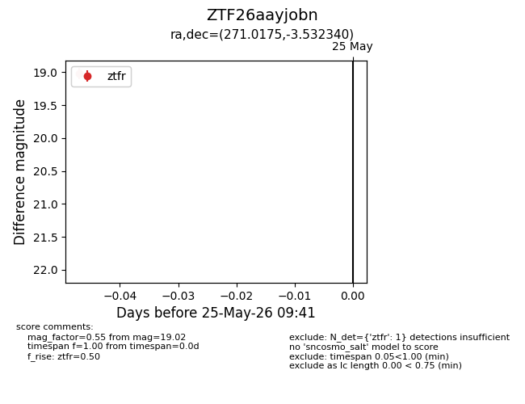
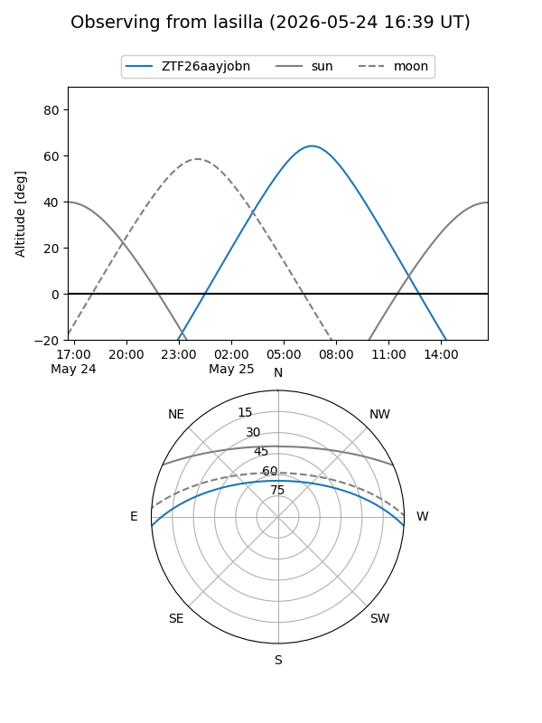
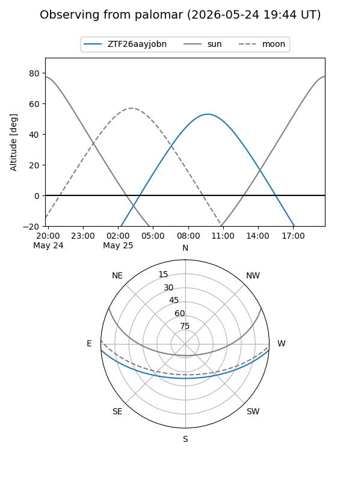

ZTF26aayjobn
Target ZTF26aayjobn at 2026-05-25 09:42
Aliases and brokers:
lsst-FINK: link
lsst-Lasair: link
lsst-ALeRCE: link
ztf-FINK: link
ztf-Lasair: link
ztf-ALeRCE: link
alt names
ZTF26aayjobn (ztf,fink_ztf)
Coordinates:
equatorial (ra, dec) = 271.0175,-3.53234
equatorial (HMS+DMS) = 18:04:04.20,-03:31:56.42
galactic (l, b) = (24.3036,+8.87018)
Flags:
Photometry:
last ztfr=19.02
1 ztfr detections
Lightcurve

Visibility


Additional plots